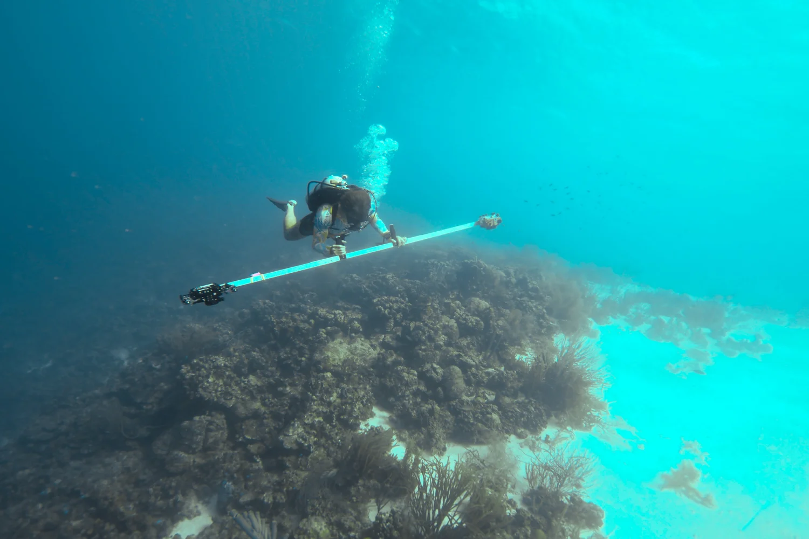
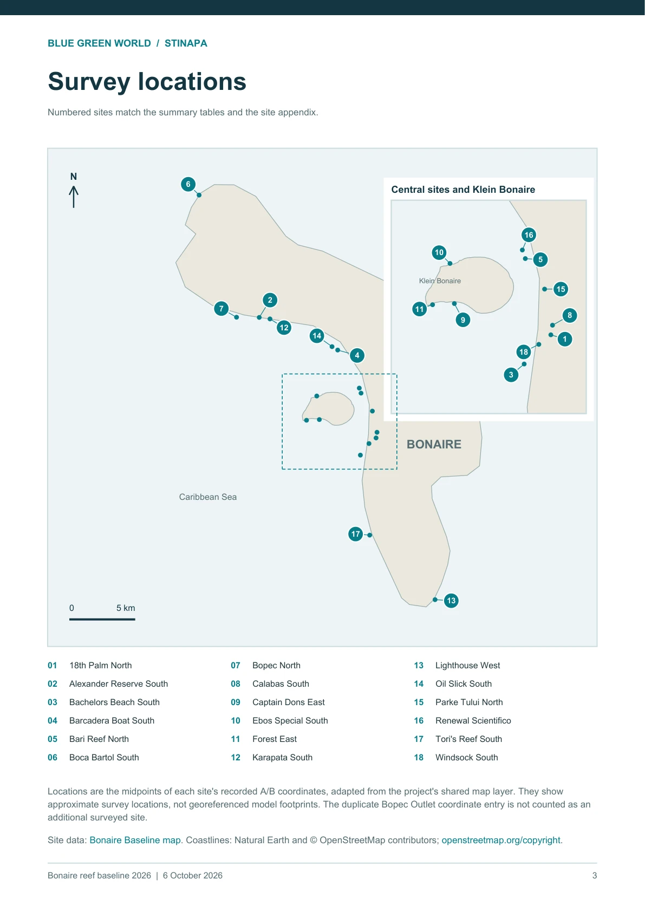

BONAIRE & KLEIN BONAIRE
Bonaire Reef
Baseline 2026
A photographic and three-dimensional record of 18 reef sites, prepared for STINAPA’s continued reef monitoring.
SURVEY SUMMARY & SITE REPORTS · 6 OCTOBER 2026

Area is approximate reef-facing mapped area (3.416 ha), not full three-dimensional surface area. Pixel size is sampling resolution, not positional accuracy.
A record for the next survey
The collection preserves evidence of reef condition and structure for monitoring, future survey design and subsequent ecological analysis. It provides a repeatable spatial record for comparison with earlier surveys and future assessment of ecological change.
This report summarises the 2026 outputs only. Alignment between survey years and comparative analysis remain planned work.
What the project produced
- Photographic archive
- Original Sony RAW photographs and processed JPEG reconstruction inputs.
- 3D reconstruction projects
- Editable Metashape projects retaining camera alignment, scale references, depth maps and reef meshes.
- Orthomosaics & QGIS projects
- Tiled TIFF mosaics and companion projects for detailed viewing and measurement in local coordinates.
- Reports & reference material
- Site PDFs, GPS/depth records, colour-matching material, calibration files and field documentation.
Explore the survey sites
Select a site to view its measurements, reconstruction, survey data, elevation preview and orthomosaic detail.
SURVEY CONTEXT
Survey locations
18 sites around Bonaire and Klein Bonaire.

Locations are midpoints of the recorded A/B coordinates, adapted from the project’s shared map layer. They show approximate survey locations, rather than georeferenced model footprints. The duplicate Bopec Outlet coordinate entry is not counted as an additional surveyed site.
Site data: Bonaire Baseline map. Coastlines: Natural Earth and © OpenStreetMap contributors.
2026 FIELD CAPTURE & RECONSTRUCTION
Methods & interpretation
Field capture
Two divers work together: a camera operator scans with a paired-camera rig, while an assistant establishes the survey bounds, positions and retrieves scale bars, and records reference depths. Overlapping passes follow reef contours from deeper to shallower levels. Eight planned scale bars, arranged on the two sides of each scan, provide metric references; usable coverage varies by site.
Positioning and scale
The team returned to the original GPS coordinates using a Garmin watch at the surface and dropped markers to define scan boundaries. With the watch’s sub-10 m positioning accuracy, boundaries may vary slightly between years; the survey was planned to include the original scan edges at every site. Scale bars establish local metric scale, and depths at their centres support vertical orientation. The 2026 models will be aligned to the georeferenced baseline scans in Wildflow.
Image processing
Source reports document Sony ILCE-6400 and ILCE-6700 imagery. RAW photographs were developed into JPEG reconstruction inputs, with colour-matching material retained. Metashape aligned and assessed the images; low-scoring photographs were excluded from subsequent processing. The current workflow builds or reuses depth maps at Low resolution with Mild filtering, reconstructs a reef mesh and generates a reef-facing mosaic.
Export and quality records
Orthomosaics were exported as tiled TIFFs with companion world and projection files, then assembled in QGIS. Exported tiles were decoded to check readability. Reports record photograph counts, alignment, quality retention, scale bars and reconstruction parameters. Orthomosaic samples were exported from QGIS at 300 dpi.
Reading the measurements
- Pixel size describes sampling resolution, rather than positional or ecological-measurement accuracy.
- Depth ranges refer to scale-bar reference depths (8.6–21.1 m across the survey).
- Campaign totals use rounded reef-facing areas from source page 1. Native survey-data coverage may differ because the projections differ.
- Image-quality filtering alone does not measure ecological change. Bopec retained 61%; the retaken Oil Slick scan reports 94% of captured photographs.
- Usable scale bars are local metric references, rather than independent GPS checkpoints.
- Model-derived elevation previews do not establish survey-grade absolute bathymetry or delivery of a separate georeferenced bathymetric raster.
Orthomosaic detail pages
Each sample covers approximately 7 × 8.9 m in the local reef-facing projection, at the approved doubled magnification. The 1 m graphic scale bar remains embedded in the image and resizes with it. On-screen physical scale varies by device.
THE REFERENCE PACKAGE
Delivery & sources
Hard-drive delivery
The files will be delivered to STINAPA on the single BonaireBase 4 TB hard drive. The package is organised by site and survey date: original RAW photographs, processed JPEGs, Metashape projects and data folders, orthomosaic TIFF tiles and sidecars, QGIS projects and complete individual PDF reports. GPS/depth records, calibration, colour-matching material and available field media accompany the collection.
The recorded delivery size is 2.86 TB, from the 29 September inventory of scan and supporting folders (1 TB = 10¹² bytes). It is an inventory snapshot.
Using the files
Open QGIS projects with their adjacent TIFF folders intact. Keep each Metashape project together with its .files folder and source-image structure. Full processing, calibration and scale-bar details remain in the individual drive reports.
Planned alignment and publication
Future work will align scans between survey years using Wildflow. The 2026 scans are not presented as already co-registered with earlier surveys. A publication comparing the years is planned with STINAPA in the collaboration. Quantified ecological change, coral-cover classification and other comparative results are outside the completed scope.
Site continuity
Renewal Scientifico combines the Buddy Dive/Reef Scientifico area. Field notes also document Barcadera’s move to the boat-access location, Forest coordinate history, and earlier marker-number corrections at Karapata and Alexander Reserve. These records should inform footprint matching.
Sources
Eighteen 2026 Metashape site reports issued 22 September–5 October; Alexander Reserve regenerated 29 September and Oil Slick South 5 October. This website reproduces the updated combined report issued 6 October 2026, including source pages 1, 2 and 8 and the QGIS sample for each site.
Supporting references: Baseline Methods; Baseline Scan Protocol for Bonaire v3; 2026 Baseline GPS & Depth; Bonaire Baseline map and A/B coordinate export; 2026 project-lead positioning and delivery notes. Historical area totals and earlier single-site processing settings are not carried into this summary.